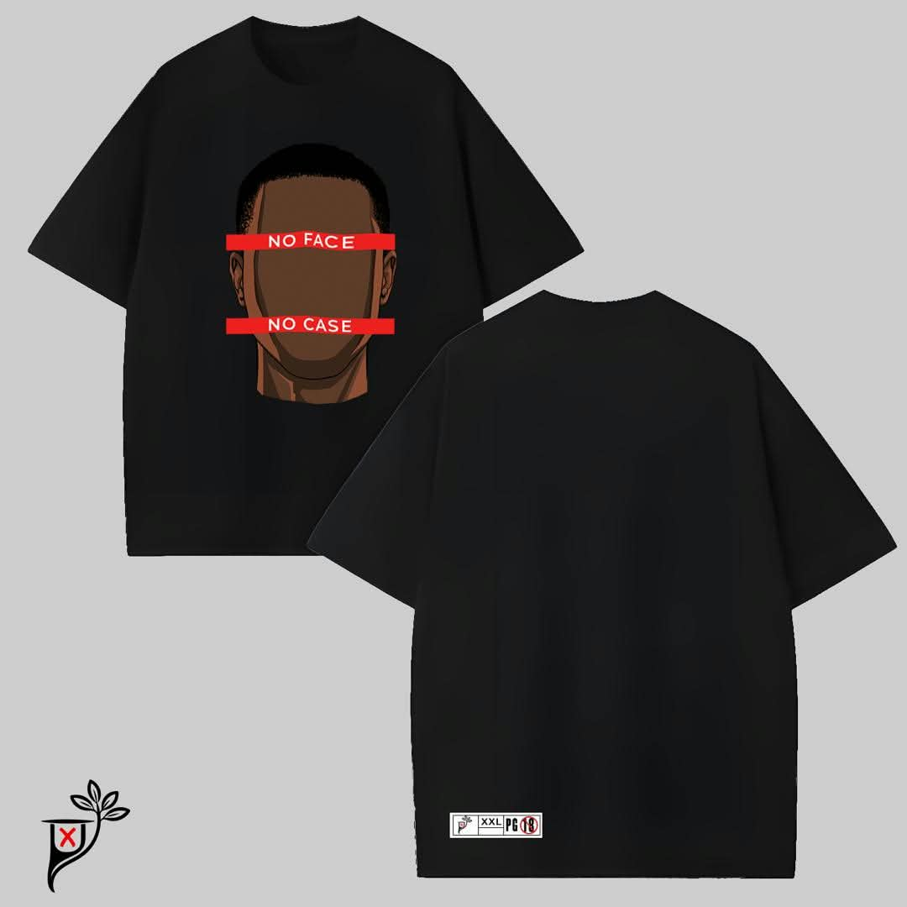
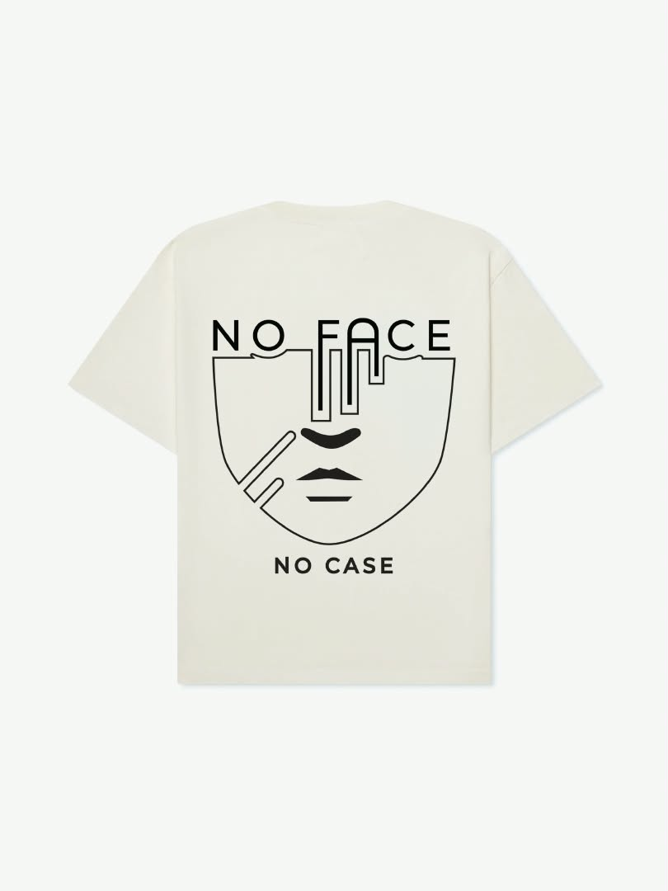

PAEGIX Clothings
A small clothing brand I started. The designs focus on clean graphics and simple messages. I handle the concepts and work with local printers to produce the shirts.
View brand →A few things I have worked on so far.

A small clothing brand I started. The designs focus on clean graphics and simple messages. I handle the concepts and work with local printers to produce the shirts.
View brand →
Early design work for the brand, including the “No Face No Case” series. These pieces helped me learn how to turn an idea into something people can wear.
See designs →Ongoing assignments and practical tasks from my cybersecurity studies. These focus on understanding common threats, basic network security concepts, and everyday safe computing practices.
Course related →